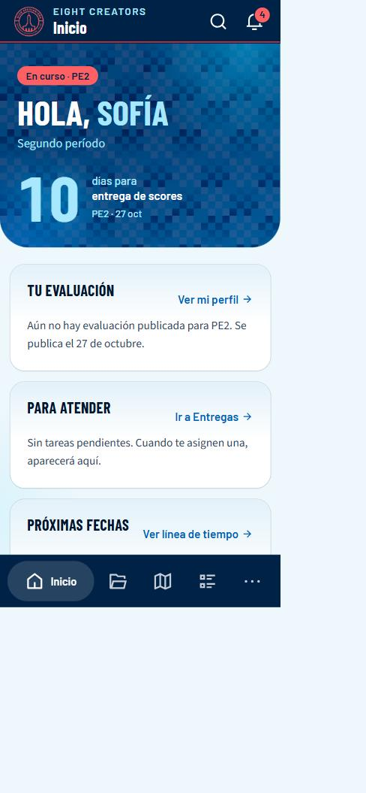
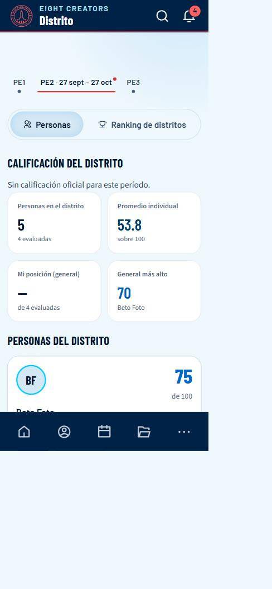
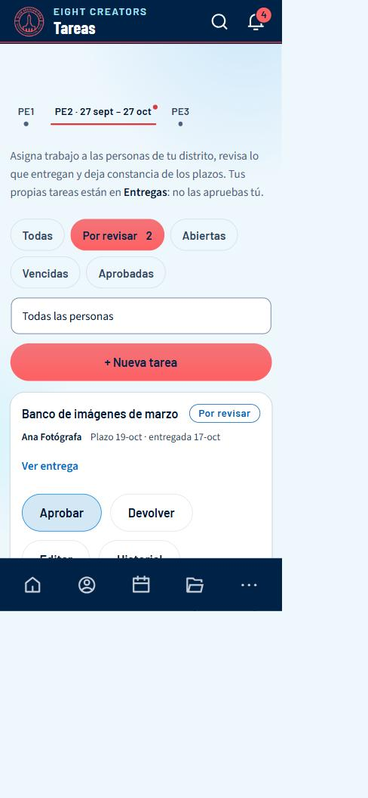

EIGHT CREATORS LABs · CELIDER 08 Santiago
Manual para secretarías de distrito
Cómo usar el portal si eres Secretario o Secretaria
Además de todo lo que ve un miembro, tienes dos herramientas para tu distrito: ver a su gente y asignar y revisar tareas. Este manual explica las dos y lo que cambia en el resto.
Las capturas son del entorno de pruebas del portal con datos de ejemplo (nombres y cifras inventados). En el celular real, la barra de arriba y la de abajo se ven igual.
1Entrar y moverte por el portal
La dirección del portal es eight-coms.vercel.app. Funciona en cualquier navegador moderno, en computadora y en celular.
Crear tu cuenta
- Abre el portal y toca Crear cuenta.
- Escribe tu nombre, tu correo y una contraseña. La barra de seguridad te dice si es débil o fuerte.
- Revisa tu correo y pulsa el enlace de Confirmar mi correo. Si no llega, mira en «Spam».
- Espera la aprobación de la administración: hasta entonces, al entrar verás un aviso de que tu acceso está pendiente. Cuando te aprueban, te llega un correo y ya puedes entrar.
Iniciar sesión y recuperar la contraseña
- En Entrar escribe tu correo y tu contraseña.
- Si la olvidaste, toca Olvidé mi contraseña: te enviamos un código de verificación de 6 cifras. Escríbelo y elige la nueva clave.
Cómo está organizado
En computadora
El menú vertical azul de la izquierda lleva a cada sección. Arriba tienes Buscar (atajo Ctrl + K) para saltar a una persona o sección. Abajo, tu nombre abre Mi cuenta, y los iconos sirven para cambiar el tema (claro/oscuro) y salir. El botón Avisos muestra cuántos avisos tienes sin leer.
En celular
Arriba hay una cabecera con el nombre de la pantalla, la lupa (buscar) y la campana (avisos). Abajo, una barra de iconos: solo el destino en el que estás muestra su nombre; los demás son solo icono. El último botón (Más o Cuenta) abre un panel con el resto de secciones, tu cuenta, el tema y Cerrar sesión. Ese panel se cierra con la X, tocando fuera o arrastrando la rayita de arriba hacia abajo.
Instalar el portal como una app
Puedes tenerlo en la pantalla de inicio de tu celular, con su icono, sin la barra del navegador.
En computadora
En Chrome o Edge, usa el icono de instalar de la barra de direcciones, o el menú ⋮ → «Instalar EIGHT CREATORS LABs».
En celular
Android (Chrome): abre Mi cuenta → Instalar en tu celular y acepta. Si no aparece el cuadro, menú ⋮ → «Instalar app». iPhone (solo Safari): toca el botón Compartir (el cuadro con la flecha hacia arriba) → Añadir a pantalla de inicio. En iPhone, Chrome y otros navegadores no pueden instalarla.
2Inicio y tu espacio personal
Inicio, Mi perfil, Calendario y Entregas funcionan como en el manual del miembro (consulta ese manual para el detalle de la rúbrica, los estados de tareas y el calendario). En Inicio, además, hay un bloque con el estado de tu distrito.

3Distrito: tu gente
Tiene dos pestañas internas: Personas y Ranking de distritos.

- Abre Distrito y elige el período arriba (PE1, PE2…).
- En Personas ves los indicadores del distrito (personas, promedio individual, tu posición, el general más alto) y una tarjeta por persona con su nota. En los períodos nuevos, cada tarjeta indica «N por revisar» y «N vencidas».
- Toca una tarjeta para abrir el perfil de esa persona en un panel (en el celular, una hoja desde abajo). Ahí ves sus pestañas Resumen, Criterios, Tareas y Evolución, igual que ella.
- En Ranking de distritos comparas los distritos del equipo.
4Tareas: asignar y revisar
Aquí asignas trabajo a las personas de tu distrito y revisas lo que entregan. Tus propias tareas están en Entregas.

Asignar una tarea
- Abre Tareas y toca + Nueva tarea (o, desde el perfil de una persona, Nueva tarea; o desde el calendario, en un día).
- Elige la persona, escribe el título y qué se espera, la fecha límite y la prioridad. Si hay varios períodos de rúbrica por roles, elige el período.
- Guarda. La persona recibe un aviso (y un correo) con la tarea y su fecha.
Revisar una entrega
- Entra a Tareas y usa el filtro Por revisar (muestra el número).
- Pulsa Ver entrega para leer el enlace o la nota.
- Si está bien, Aprobar: es obligatorio ponerle puntos de 0 a 10. Los puntos son un dato para quien evalúa; no entran en ninguna fórmula.
- Si hay que corregir, Devolver y escribe la observación (obligatoria). La persona recibe un aviso con tu observación.
| Botón | Para qué |
|---|---|
| Editar | Cambiar el título, la descripción o la prioridad de una tarea que asignaste. |
| Mover el plazo | Cambia la fecha límite con un motivo (mínimo 5 caracteres). La fecha original queda registrada y la persona recibe un aviso. |
| Historial | Cada cambio: quién, qué y cuándo. No se puede borrar. |
| Filtro por persona | Ver solo las tareas de una persona. |
5Avisos (la campana)
Todo lo que te llega por correo también aparece en la campana, con su estado de leído / sin leer. Es la misma información: no se inventan avisos aparte.
- Toca la campana 🔔 de la cabecera (en computadora: Avisos en el menú de la izquierda). Si tienes avisos sin leer, verás un número en rojo.
- Se abre el panel Avisos: agrupados en Hoy / Ayer / Esta semana / Antes, con un icono por categoría (tareas, evaluaciones, actividades, accesos) y cuánto hace que ocurrieron. Los sin leer tienen fondo tenue, una barra a la izquierda y el título en negrita.
- Toca un aviso: se marca como leído y te lleva a la sección donde se resuelve (por ejemplo, una tarea devuelta te lleva a Entregas).
- Usa Sin leer para ver solo los pendientes y Marcar todo para dejarlos todos como leídos. Ver avisos anteriores carga más.

| Si ves… | Significa |
|---|---|
| Nueva tarea · Cambió el plazo | Te asignaron una tarea a ti, o se movió su plazo. |
| «Fulana entregó: …» | Una persona de tu distrito entregó y espera tu revisión (Tareas → Por revisar). |
| Tarea bloqueada | Alguien de tu distrito marcó que está esperando algo; mientras tanto no cuenta como atrasada. |
| Vence / Tarea vencida · Te devolvieron · Aprobaron | Lo mismo que para cualquier persona, sobre tus propias tareas. |
| Tu evaluación está publicada | Tu resultado está en Mi perfil. |
| Nueva actividad · Mañana: … | Una actividad del equipo o de tu distrito. |
6Mi cuenta
Es tu espacio personal. Se abre con tu nombre (computadora) o desde Más → tu nombre (celular).
- Cambiar foto: elige cualquier imagen del teléfono o la computadora; no importa su tamaño. El portal la recorta en cuadrado y la reduce solo (queda ligera, de pocos KB).
- Nombre: escríbelo y toca Guardar.
- Tema: alterna entre claro y oscuro.
- Nueva contraseña y Repite la contraseña: mínimo 8 caracteres → Cambiar contraseña.
- Instalar en tu celular: ver «Entrar y moverte».
- Cerrar sesión: sales de este dispositivo.

Correo, tipo de acceso y distrito aparecen en «Tus datos» solo para que los veas: los asigna la administración.
7Lo que aún no hace
- Reportes: no tienes pantalla de reportes ni exportación; los genera la administración.
- Evaluar la rúbrica: la puntuación la hace la administración. Tú ves el resultado de tu distrito cuando se publica.
- Roles de preferencia, roles por actividad y asignación con vista de compatibilidad: todavía no existen. La asignación de tareas es por persona, sin roles.
- Vista global de todos los PE por rol: no existe; ves los períodos de uno en uno.
- Guía de bienvenida paso a paso: no existe.
8Permisos y límites
Lo que puedes y no puedes hacer con este tipo de cuenta. Los permisos los decide la base de datos, no la pantalla: si un botón no aparece, es porque tu cuenta no puede hacerlo.
| Acción | Con tu cuenta |
|---|---|
| Lo mismo que un miembro: tu perfil, tus entregas, calendario, avisos y cuenta | Sí |
| Ver los perfiles de las personas de tu distrito | Sí, solo de tu distrito |
| Ver el ranking de distritos | Sí |
| Asignar tareas a las personas de tu distrito | Sí |
| Revisar entregas: aprobar (con puntos) o devolver (con observación) | Sí, solo las de tu distrito |
| Aprobar tus propias tareas | No: no se aprueban a sí mismas |
| Cambiar la fecha límite de una tarea que asignaste | Sí, con un motivo (la persona recibe un aviso) |
| Evaluar (puntuar la rúbrica) | No: lo hace la administración |
| Crear actividades para todo el equipo | No: solo para tu distrito, donde esté habilitado; las del equipo las crea la administración |
| Generar reportes | No: los genera la administración |
| Cambiar roles, distritos o accesos | No |